192 proposals; 184.5s cumulative search; stopped at evaluation-budget. SEALED: reserved outcomes evaluated after freeze; this run cannot resume.
Orange geometry has compatible photographic support; gray geometry has no compatible support. Cyan dots are observed patch/region representatives. White numbers are conditional indices, with historical −20…200 retained and bead 0 circled. No repeating color pattern is used. Geometric centers are not measured patch centers.
Counts, helicity, topology and ownership remain competing hypotheses. The reference centerline is periodic by construction; its closure does not establish a physical joint. Bright-patch containment alone does not certify ownership. Native first-hit visibility is a model prediction.
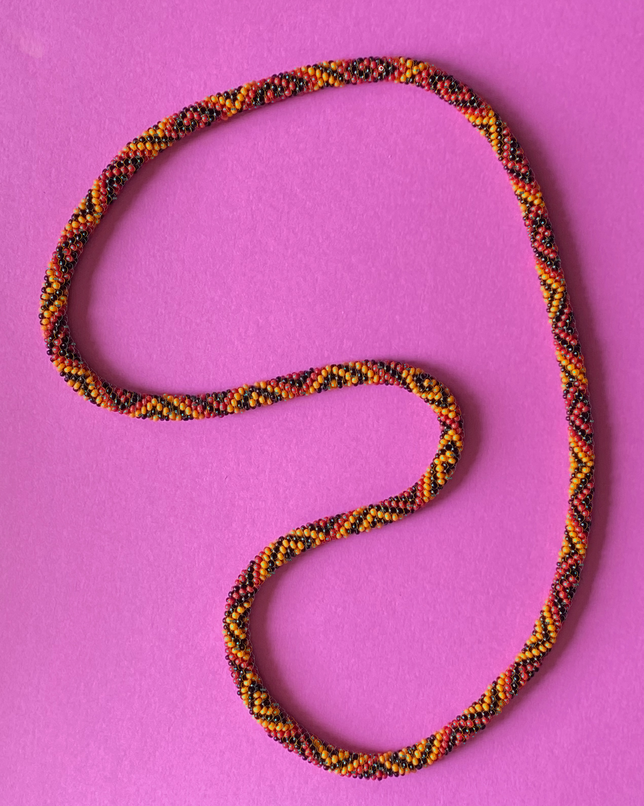
Geographically separated validation and reserved regions outside R294/R295's exposed window; all historical judgments are training provenance. Same previously examined photograph, not blind new-image accuracy. Central/peripheral and low modeled visibility statistics are in each evaluation export.
| Model | Split | Large compatible | Large containment | Patches compatible | Unsupported sites | Min plane gap |
|---|---|---|---|---|---|---|
| 188 | train | 83/363 | 63.2% | 832/1239 | 1574 | 0.02667 |
| 188 | validation | 8/21 | 74.5% | 66/87 | 1574 | 0.02667 |
| 188 | reserved | 6/21 | 64.8% | 57/84 | 1574 | 0.02667 |
| 166 | train | 68/363 | 61.9% | 815/1239 | 1666 | 0.01093 |
| 166 | validation | 5/21 | 64.1% | 68/87 | 1666 | 0.01093 |
| 166 | reserved | 2/21 | 53.4% | 55/84 | 1666 | 0.01093 |
| 94 | train | 80/363 | 60.9% | 779/1239 | 1944 | 0.01744 |
| 94 | validation | 4/21 | 60.8% | 52/87 | 1944 | 0.01744 |
| 94 | reserved | 4/21 | 58.8% | 52/84 | 1944 | 0.01744 |
| 112 | train | 58/363 | 58.0% | 800/1239 | 1933 | 0.01451 |
| 112 | validation | 3/21 | 60.3% | 62/87 | 1933 | 0.01451 |
| 112 | reserved | 1/21 | 60.4% | 55/84 | 1933 | 0.01451 |
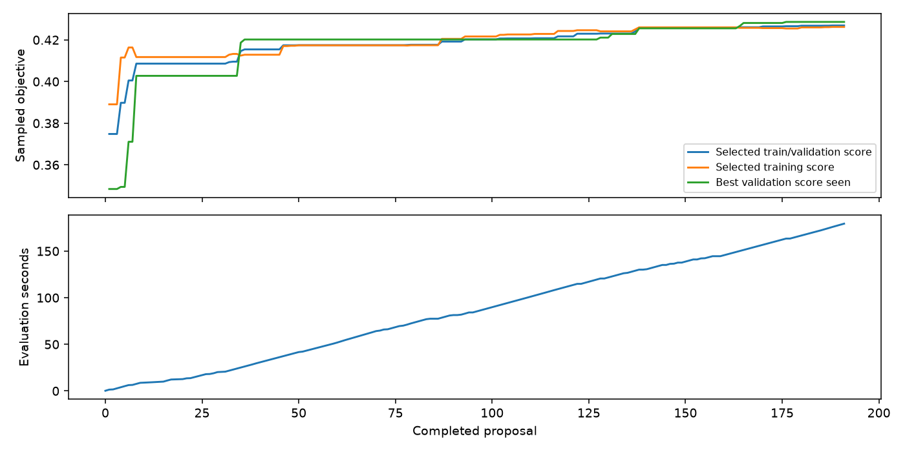
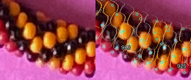
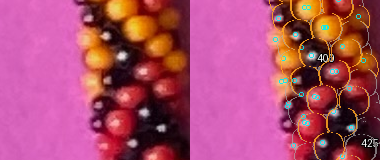
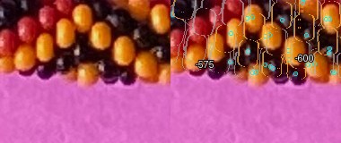
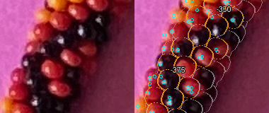
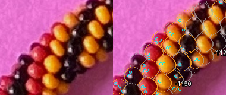
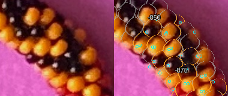
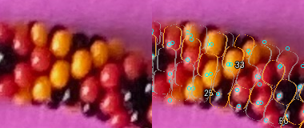
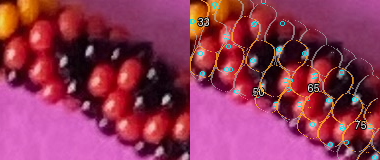
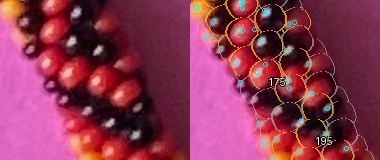